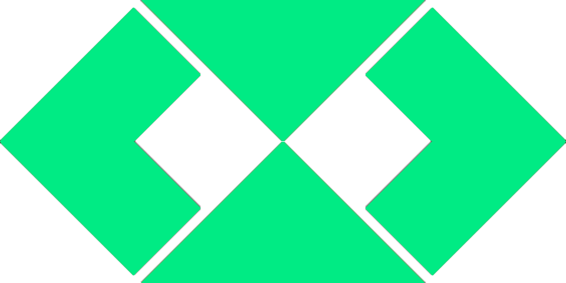

| Telefone: | (66) 9 9602-4558 (66) 9 9983-4099 |
|---|---|
Idade: |
23 Anos |
| Estado Civil: | Solteiro |
| Cidade: | Juína Mt |
| CEP: | 78320-000 |
Procuro aprender o máximo com minhas experiências tanto profissionais quanto pessoais, e as levo como bagagem positiva para o meu crescimento.
|  | Facilidade em comunicação |
|---|---|
| Honestidade para com o próximo | |
| Respeito ao próximo e reconhecer hierarquias | |
| Fácil adaptação á mudanças de setor e cargos | |
| Responsabilidade |
| 2004-2012: Ensino Fundamental Escola Estadual 7 de Setembro |
|
| 2013-2015: Ensino Médio Completo Escola Estadual Dr. Artur Antunes Maciel |
|
| Bacharelado em Administração pelo IFMT Instituto Federal de Mato Grosso campus Juína Início no ano: 2017/1 previsão de término ano: 2021/2 |
| Técnico em logística SENAI – Serviço Nacional de Aprendizagem Industrial sede Juína Carga horária: 960h Data de Inicio: 10/11/2014 Data de término: 01/06/2016 |
|
| Assistente Administrativo SENAI – Serviço Nacional de Aprendizagem Industrial sede Juína Carga horária: 160h Data de término: 06/12/2016 |
|
| Atendimento ao Público SENAI – Serviço Nacional de Aprendizagem Industrial sede Juína Carga horária: 08h Data de término: 19/11/2015 |
|
| Operador de Computador SENAI – Serviço Nacional de Aprendizagem Industrial sede Juína Carga horária: 160h Data de término: 29/08/2013 |
| (2015 - 2016) Secretária e Administrativo. Espaço Kannon Proprietário: Alessandro Cesar Prudente Domingues. Telefone: (66) 3566-3122 / (66) 9 8439-2190 Exercendo funçõs Administrativas e atendimentos. |
|
| (2016 - 2017) Cuidadora de Idosos Salete Gascho Telefone: (66) 9 9659-3202 |
|
| (2018 - 2020) Estagiária na SEFAZ SEFAZ - Secretaria de Fazenda de Mato Grosso Cargo: Estagiária Telefone: (66) 3566-2225 |
|
| (2020 - Atualmente) Metrô FM Juína Telefone: (66) 3566 - 2270 Cargo: Recepcionista/ Redatora |
Atualmente meu principal objetivo é fazer parte de uma empresa onde possa crescer profissionalmente aprendendo.
Como um estudante da área de tecnologia, busco me aprofundar e colocar em prática tudo aquilo que faz parte do mercado, mas também costumo me concentrar naquilo que percebo que gosto, como um robbie.
| Raqueline Bernardi (Gerente Sefaz) (66) 9 9658-3936 |
|
| Jadher Ávila Hanauer (Servidor Sefaz Tangara da Serra) (65) 9 9971-7672 |
|
| Hugo José Assmann (Gerente Sefaz Brasnorte) (66) 9 9991-0008 |
|
| Elaine Neris (Coordenadora de Administração IFMT) (66) 9 9614-1582 |